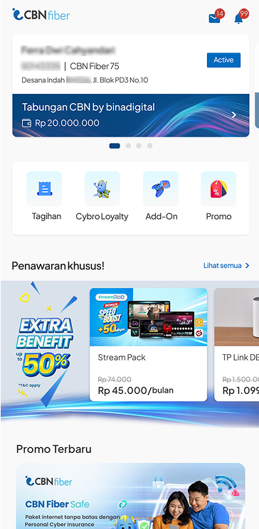
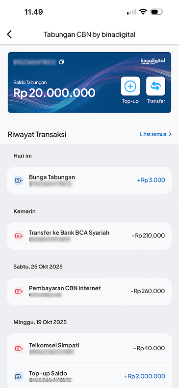
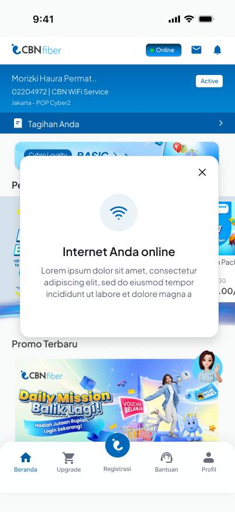
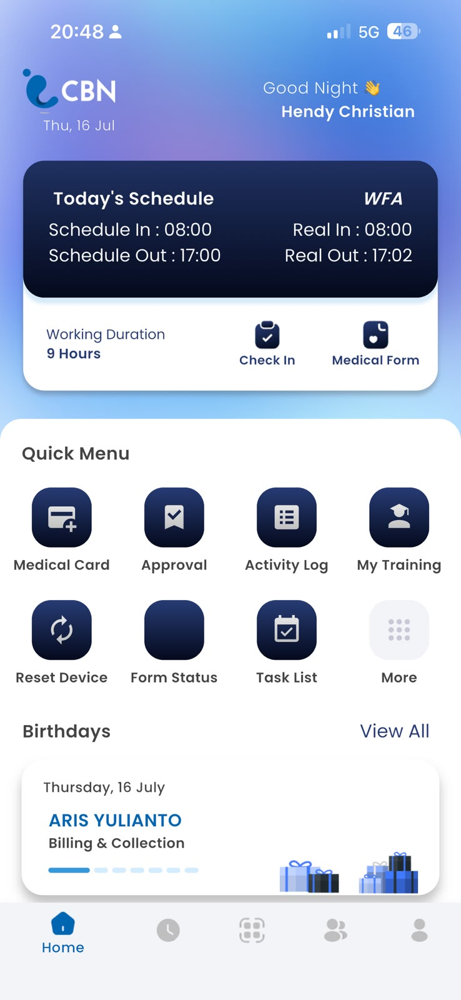
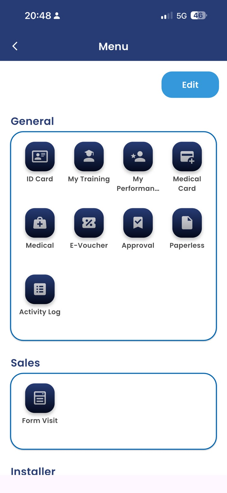
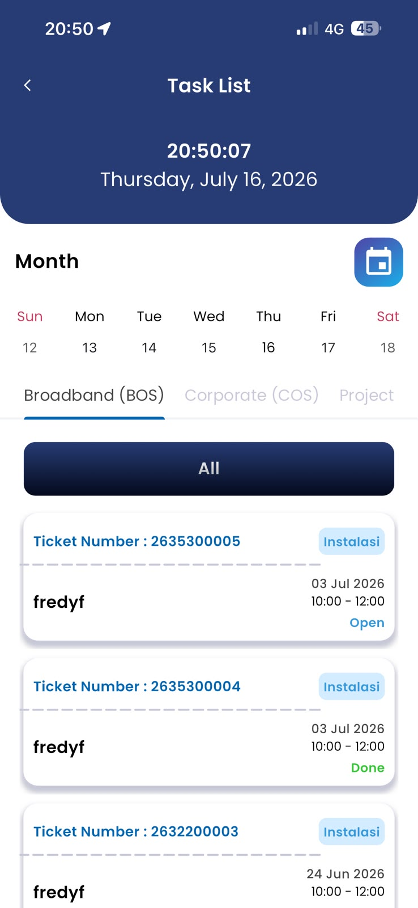

Project 01 / Mobile Application
diCBN
Built for CBN customers, diCBN brings bill payments, Bank INA services, promotions, service upgrades, and guided connection diagnostics into one mobile experience.



Mobile Application Developer
I build thoughtful mobile experiences with Flutter & Dart
Capabilities
Beyond the mobile screen
Beyond Flutter apps, I've helped maintain backend services — Golang APIs, SQL queries, and CMS/CRM workflows.
Selected work
Project 01 / Mobile Application
Built for CBN customers, diCBN brings bill payments, Bank INA services, promotions, service upgrades, and guided connection diagnostics into one mobile experience.



Project 02 / Internal Application
Designed for internal teams, CBNians simplifies employee attendance, self-service tools, approvals, and field installation reporting.



Project 03 / Parent Application
Made for parents, Klaskoo keeps student grades, class schedules, and school updates easy to follow in one place.

Project 04 / Student Application
Created for young learners, KodeKiddo brings lesson schedules, class updates, achievements, and points into a simple learning companion.

Collaboration
Production Website
Customer-facing corporate website for CBN ISP/telecom — server-side rendered dynamic zones driven by CMS, with bilingual i18n, nonce-based CSP middleware, domain-driven API integration across CMS/CRM/payment gateways, and a GitLab CI/CD pipeline with Docker, Nomad, and Sentry.
Headless CMS Platform
Enterprise headless CMS powering CBN's editorial pipeline — 74+ content types, Strapi v4 with PostgreSQL and MinIO-backed S3 storage, CKEditor 5 content authoring, multi-language authoring, and multi-environment deployment (dev/staging/live) with GitLab CI.
Project XX / Product Category
One concise sentence describing the production product and its most valuable user flows.